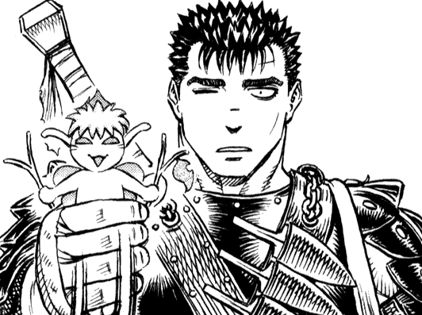

Puck
About Puck:
Not much is known of Puck prior to his run-in with Guts, other than coming from Elfheim, but ever since then, he sticked by Guts through everything they went through. A good summary of Puck might be that he's a man(elf?)-child, comedic and loyal.
